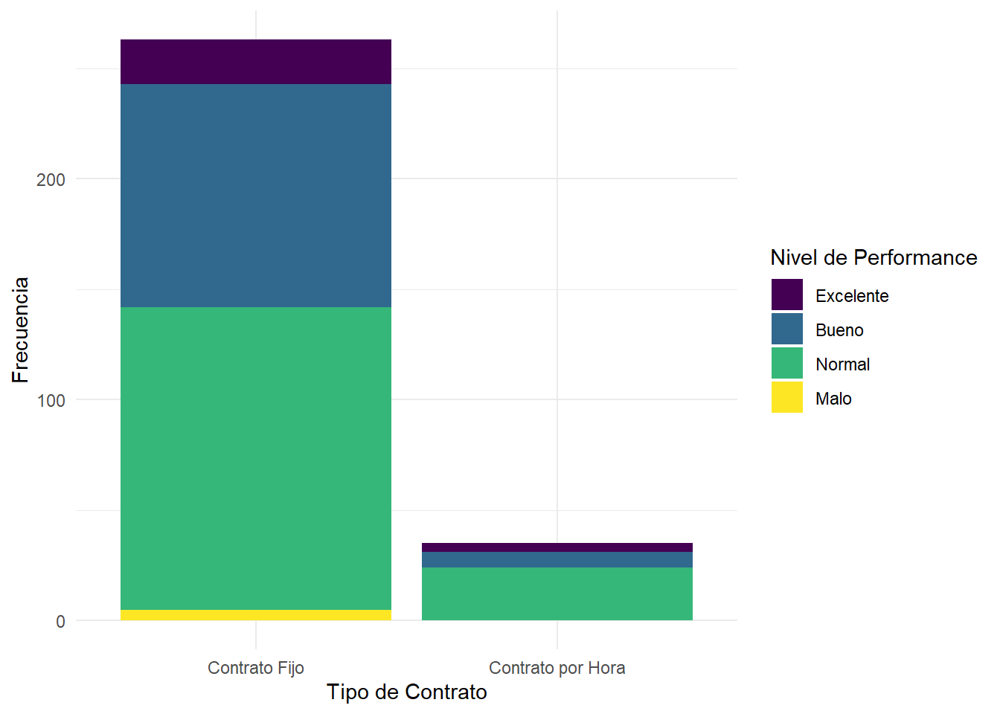
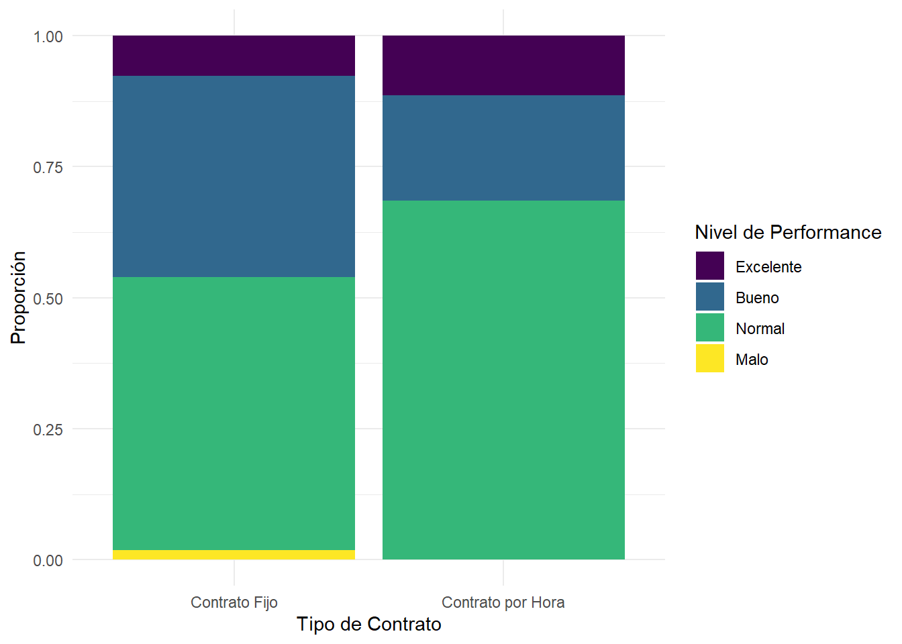
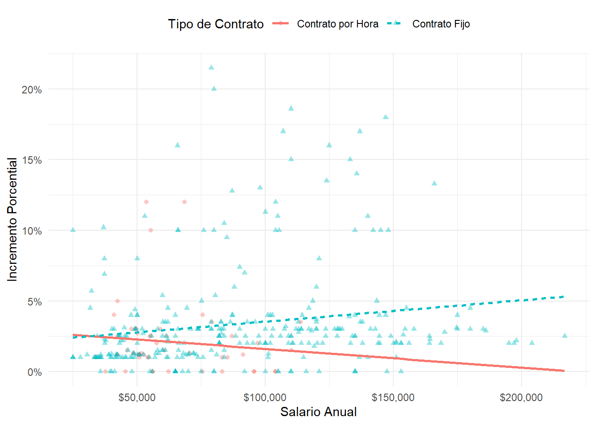
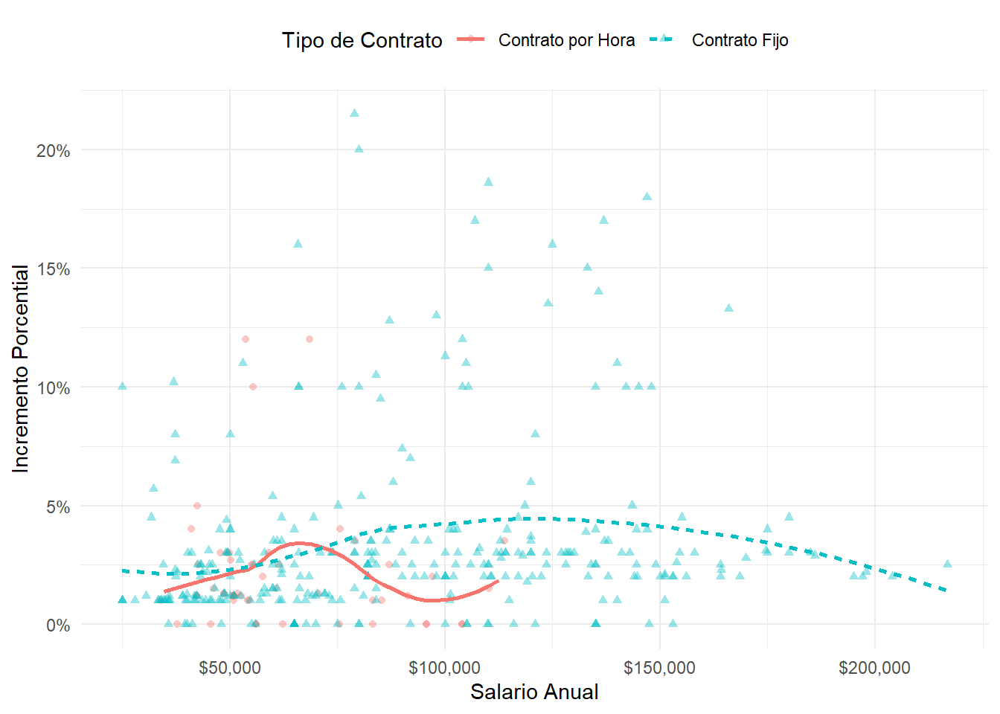
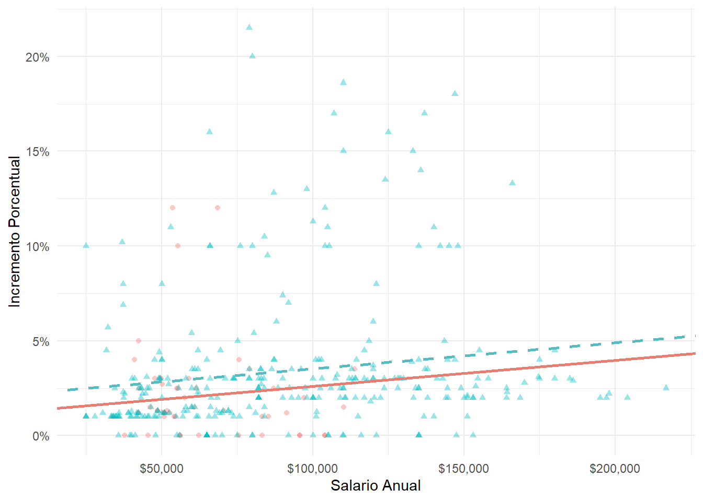
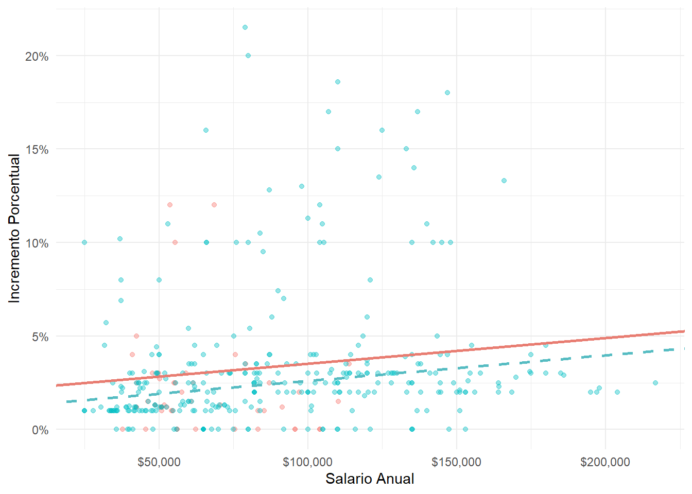

# A tibble: 409 x 4
incr_porcentual tipo_contrato salario_anual nivel_performance
<dbl> <chr> <dbl> <fct>
1 1 Contrato Fijo 25000 Bueno
2 1 Contrato Fijo 25000 Normal
3 1 Contrato Fijo 25000 Bueno
4 1 Contrato por Hora 33987. Normal
5 NA Contrato por Hora 34798. Bueno
6 NA Contrato por Hora 35360 <NA>
7 NA Contrato por Hora 37440 <NA>
8 0 Contrato por Hora 37814. <NA>
9 4 Contrato por Hora 41101. Excelente
10 1.2 Contrato por Hora 42328 <NA>
# i 399 more rowsAnalítica de Datos
Parcial II
Antes de empezar a resolver el parcial, lea todas las preguntas y, de acuerdo a su criterio, abra las diapositivas y scripts que considere útiles. Nadie debería tener abierto el correo luego de 5 minutos a menos que sea para enviar el parcial con todas las respuestas. El uso de ChatGPT (o cualquier otra plataforma de IA) no está permitido. Todas las respuestas deben ir en un documento PDF creado en Quarto o en un R Script con las respuestas como comentarios. Como se mencionó anteriormente, aquellos que entreguen las respuestas en Quarto recibirán un +0.3 en el parcial.
Para aquellos que van a entregar el documento en Quarto, les sugiero primero escribir el código en un R Script, corroborar que se está ejecutando correctamente y, luego, pasar las respuestas al documento .qmd. No incluyan el código de las gráficas que utilicen en el documento final; para el resto de las respuestas, es obligatorio incluirlo.
Las respuestas serán evaluadas en función de la claridad, precisión y calidad del análisis. Los gráficos y tablas representarán sólo la mitad del puntaje. Tienen 2 horas para resolver el parcial, por lo que hay tiempo suficiente para acortar cualquier respuesta. Cada punto vale 0,5.
Éxitos!
Preliminares
Contexto
En 2021, Blizzard Entertainment inició un proyecto de análisis de datos sobre los aumentos salariales de sus empleados. Esto fue en respuesta a las crecientes preocupaciones sobre prácticas de compensación en la industria de videojuegos, desencadenadas por un archivo de Excel anónimo que revelaba salarios internos. El objetivo era identificar posibles disparidades en los ajustes salariales entre diferentes grupos de empleados y niveles de desempeño (Fuente: Blizzard Workers Share Salaries in Revolt Over Pay).
Suponga que usted hace parte de este equipo. El nombre de los datos que usarán para este análisis es blizzard_salary y las variables relevantes son:
incr_porcentual: Aumento dado en julio de 2020, como incremento porcentual con valores entre 1 ( aumento del 1) al 21.5 (incremento del 21.5%)tipo_contrato: Tipo de contrato, con las categoríasContrato por HorayContrato Fijosalario_anual: Salario anual, en doláres (USD), con valores entre $25,000 y $216,856.nivel_performance: El nivel de la revisión del desempeño más reciente, con categoríasMalo,Normal,Bueno, yExcelente.
Las diez primeras filas de los datos blizzard_salary son las siguientes:
Parte Descriptiva
Pregunta 1
Los dos gráficos abajo muestran las distribuciones de los salarios anuales por rating de performance. ¿Cuál de las dos es mejor para visualizar la relación entre salarios anuales para los trabajadores dependiendo de su desempeño? Explique su criterio a la hora de elegir.


Pregunta 2
Supongamos que uno de sus compañeros escribió un código como parte de su análisis de los datos. Luego imprimió los resultados que se muestran a continuación. Desafortunadamente, el valor indicado con _____ se borró de la impresión.
# A tibble: 5 x 3
nivel_performance salario_anual_promedio salario_anual_mediana
<fct> <dbl> <dbl>
1 Excelente 89287. 74000
2 Bueno 92982. 89200
3 Normal _____ 70000
4 Malo 112344. 116000
5 NA 85681. 79000¿Cuál de los siguientes valores es el mejor estimado para el número faltante?
- 30,000
- 50,000
- 80,000
- 100,000
Pregunta 3
¿Cuál de las distribuciones de salario anual tiene una desviación estándar mayor?
- Trabajadores con contrato por hora
- Trabajadores con contrato fijo
- Más o menos tienen la misma
Pregunta 4
Creen una nueva variable aumento que sea el incremento en el salario que tendrían los trabajadores luego de 2020 (se multiplicaría el salario anual por(incr_porcentual/100)). Uno de sus colegas le pide graficar la dispersión entre las dos variables. ¿Cuál sería su conclusión sobre la relación entre el salario base y el incremento basándose en la gráfica?
Parte Inferencial
Pregunta 5
Proponga una situación en la que tenga que calcular un intervalo de confianza de alguna de las variables, calcule el intervalo y haga el análisis correspondiente que responda a esa pregunta.
Pregunta 6
El jefe del equipo de trabajo sugiere que los salarios anuales (salario_anual) son el primer predictor de los incrementos (incr_porcentual). El modelo aumento_1 estima la siguiente ecuación:
\[\widehat{\text{Incremento Porcentual}}=\hat{\beta_0}+\hat{\beta_1}\times \text{Salario Anual}\]
¿Cual de las siguientes interpretaciones es la mejor para el coeficiente de la pendiente?
- Por cada $1,000 de salario anual, el modelo predice que el aumento salarial será mayor por 1.59% en promedio.
- Por cada $1,000 de salario anual, el aumento salarial sube por 0.0159%.
- Por cada $1,000 de salario anual, el modelo predice que el aumento salarial será mayor por 0.0159% en promedio.
- Por cada $1,000 de salario anual, el modelo predice que el aumento salarial será mayor por 1.83% en promedio.
Pregunta 7
¿El modelo aumento_1 cumple las condiciones de linealidad, varianza constante y normalidad de los errores? Utilice gráficas para sustentar su respuesta.
Pregunta 8
Dos de sus colegas proponen dos modelos diferentes para predecir incr_porcentual. El primer modelo, al que llaman modelo_1, hace la estimación usando salario anual y una variable dummy si el trabajador tiene un contrato fijo de la siguiente manera:
\[\widehat{\text{Incremento Porcentual}}=\hat{\beta_0}+\hat{\beta_1}\times \text{Salario Anual}+\hat{\beta_2}\times \text{Contrato Fijo}\]
Por otro lado, el segundo modelo llamado modelo_2, utilizaría variables dummy para las categorías de nivel_performance estimando:
\[\widehat{\text{Incremento Porcentual}}=\hat{\beta_0}+\hat{\beta_1}\times \text{Salario Anual}+\hat{\beta_2}\times \text{Malo}+\hat{\beta_3}\times \text{Normal} +\hat{\beta_4}\times \text{Excelente}\]
¿Cuál de los dos modelos elegiría usted y cuál sería su criterio?
Pregunta 9
# A tibble: 5 x 5
term estimate std.error statistic p.value
<chr> <dbl> <dbl> <dbl> <dbl>
1 (Intercept) 3.52 0.515 6.84 5.01e-11
2 salario_anual 0.0000102 0.00000443 2.30 2.20e- 2
3 nivel_performanceMalo -4.07 1.42 -2.86 4.55e- 3
4 nivel_performanceNormal -2.40 0.397 -6.03 5.12e- 9
5 nivel_performanceExcelente 2.99 0.714 4.19 3.77e- 5Cuando uno de sus colegas ve el resultado de la estimación, le comenta que “el coeficiente para nivel_performanceNormal es negativo, qué raro! Supongo que significa que la gente cuando tiene un peformance Normal reciben un aumento menor.” ¿Cómo le respondería a su colega?
Pregunta 10
# A tibble: 3 x 5
term estimate std.error statistic p.value
<chr> <dbl> <dbl> <dbl> <dbl>
1 (Intercept) 1.22 0.572 2.13 0.0335
2 salario_anual 0.0000141 0.00000470 2.99 0.00294
3 tipo_contratoContrato Fijo 0.900 0.544 1.65 0.0993 ¿Cuál de las siguientes gráficas explica el modelo estimado? Explique su respuesta.




Bono (0.5)
Los casos ‘Denial’ y ‘Fortune Telling’ en el gráfico a continuación ilustran dos problemas comunes al estimar una línea de regresión. Explique con sus propias palabras en qué consisten estos dos problemas.